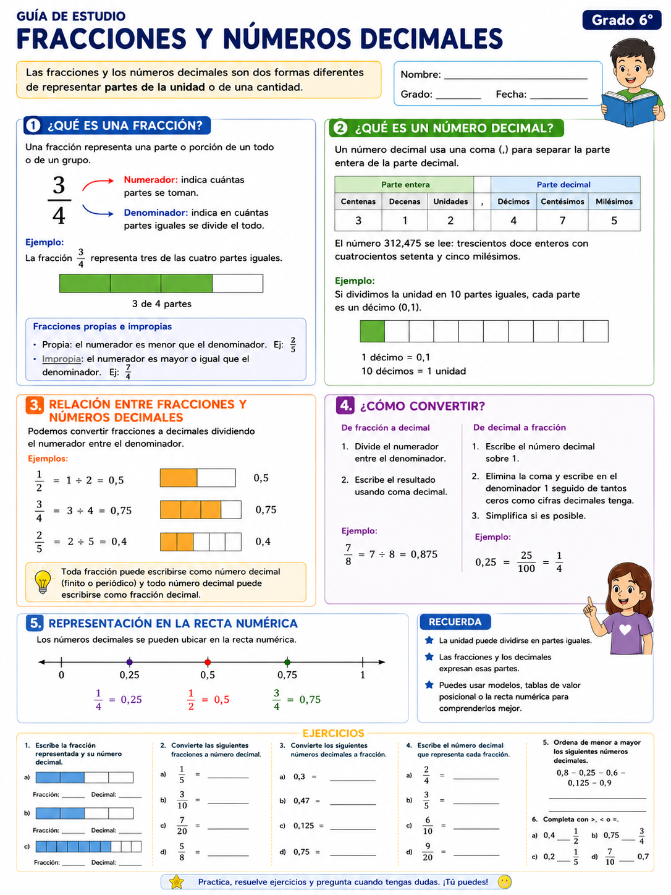
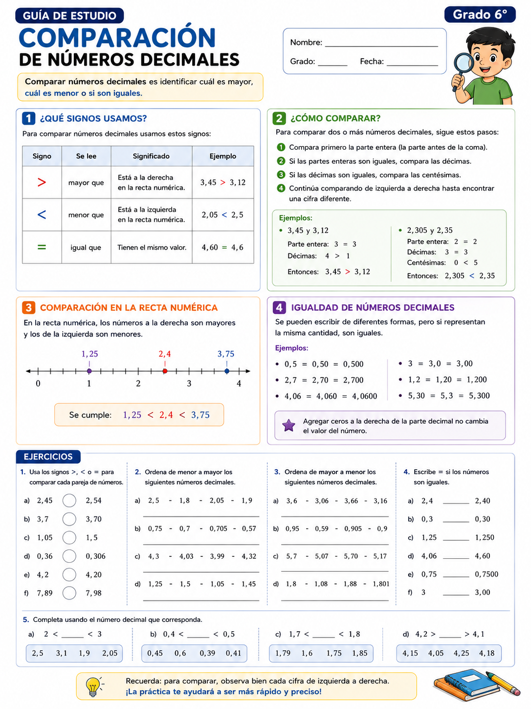
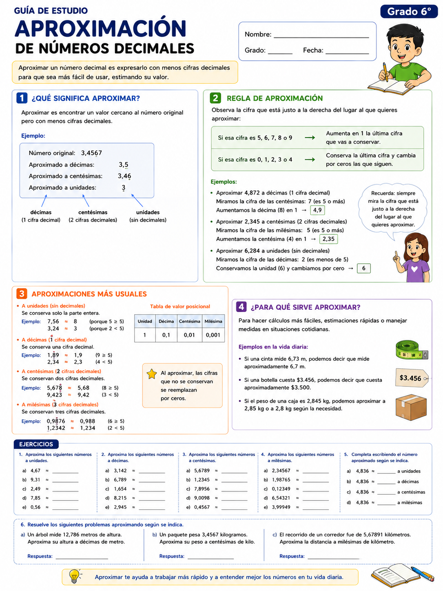
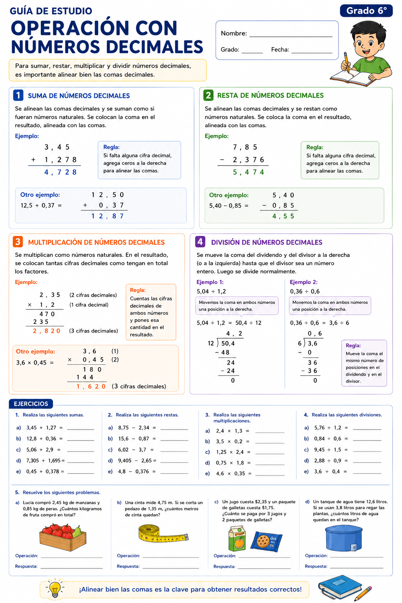

Matemáticas
Guía de preparación para la evaluación del tercer periodo.
1 Fracciones y números decimales.

Material visual del tema con conceptos fundamentales, ejemplos y ejercicios de aplicación.
2 Comparación de números decimales.

Material visual del tema con conceptos fundamentales, ejemplos y ejercicios de aplicación.
3 Aproximación de números decimales.

Material visual del tema con conceptos fundamentales, ejemplos y ejercicios de aplicación.
4 Operación con números decimales.

Material visual del tema con conceptos fundamentales, ejemplos y ejercicios de aplicación.